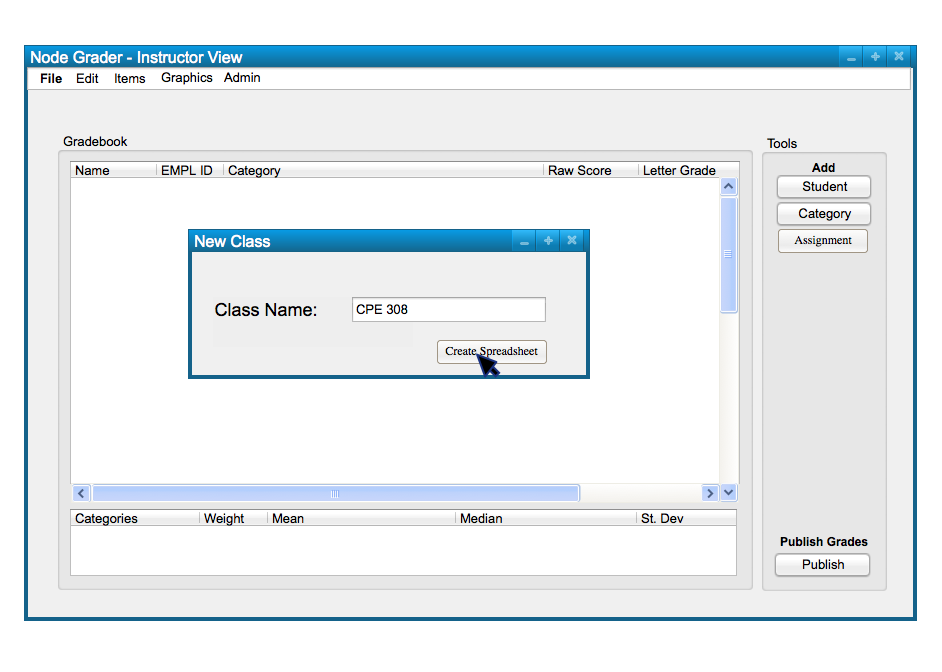
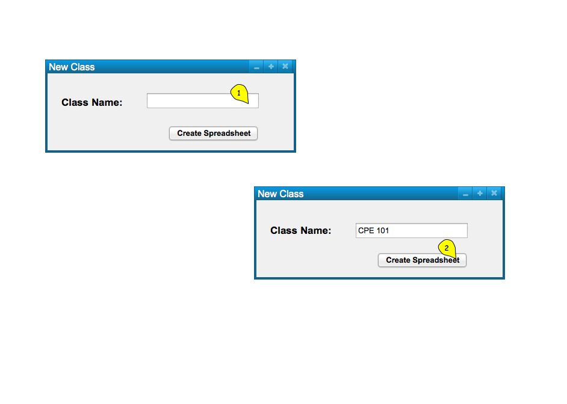
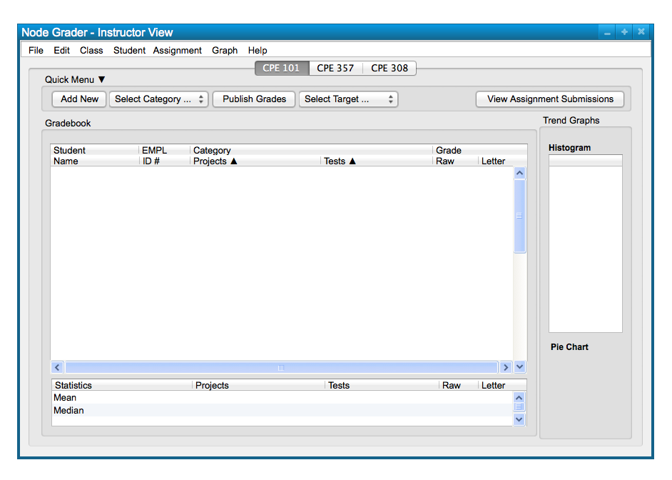

In this scenario, we will take a look at how a user can add a new class spreadsheet
manually, via the 'Class' menu and the Quick Menu commands. Manually adding a class
is necessary to start a new spreadsheet to which a user can add students and gradable items.
Below, in Figure 1, is a sample class spreadsheet that is ready for a user who wants to make a new
class.
Figure 1: Sample Class Spreadsheet.
To manually create a new class spreadsheet, the user chooses the 'Class' menu
command. A list of options will appear and the user chooses
'New Class...' to add a new class; this will take the form of the
following, Figure 2.

Figure 2: Add Class path.
The other commands in the 'Class' submenu are Manage Class, Grade Schema, and Late Policy. These commands will be covered in later scenarios, but for now we will focus on just adding a spreadsheet for a new class.
Figure 3 shows the response to the users selection of the
'Class New Class' command.

Figure 3: New Class dialog.
The figure shows a dialog box for adding a new class. The dialog box only takes in a name in a text box, and can be confirmed with the 'Create Speadsheet' button below. Confirming the class will create a new tab above the spreadsheet that can be selected to switch between multiple classes if applicable.
When the user selects the 'Create Spreadsheet' button, the system
displays the newly created spreadsheet in Figure 4.

Figure 4: Class Added view.
New classes can be added and dragged to be rearranged in a preferred order. Adding a new
is required to start a new spreadhseet for editing.
The scenario itself will not be covered, but for the user knowledge, a class may also be added manually
using the Quick Menu, located above the spreadsheet. To do this, a user selects 'Class' in the selcection
tab and clicks the 'Add New' button next to it. This is displayed in Figure 5 below.

Figure 5: Add Class Quick Menu.